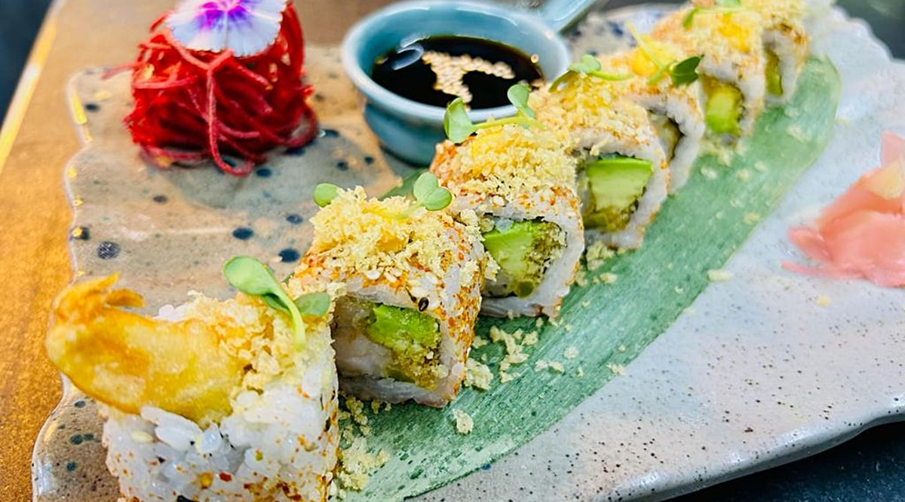

Sushi
Home

Description
Sushi is one of Japan’s most iconic culinary creations, known for
its elegant presentation and fresh, delicate flavors. Maki rolls are a beginner-friendly
style of sushi where seasoned rice and a variety of fillings—like crisp cucumber, creamy
avocado, or tender seafood—are rolled inside a sheet of seaweed (nori).
Ingredients
- 2 cups sushi rice
- 2 ½ cups water
- ¼ cup rice vinegar
- 1 tbsp olive oil
- Fillings: cucumber, avocado, crab sticks, or raw salmon/tuna (sushi grade)
- Salt and pepper to taste
- Soy sauce, pickled ginger, and wasabi (for serving)
Steps
- Rinse rice until water runs clear. Cook it in water.
- Mix vinegar, sugar, and salt. Stir into the cooked rice and cool it.
- Place a sheet of nori on a bamboo mat.
- Spread a thin layer of rice over the nori, leaving 1 inch at the top.